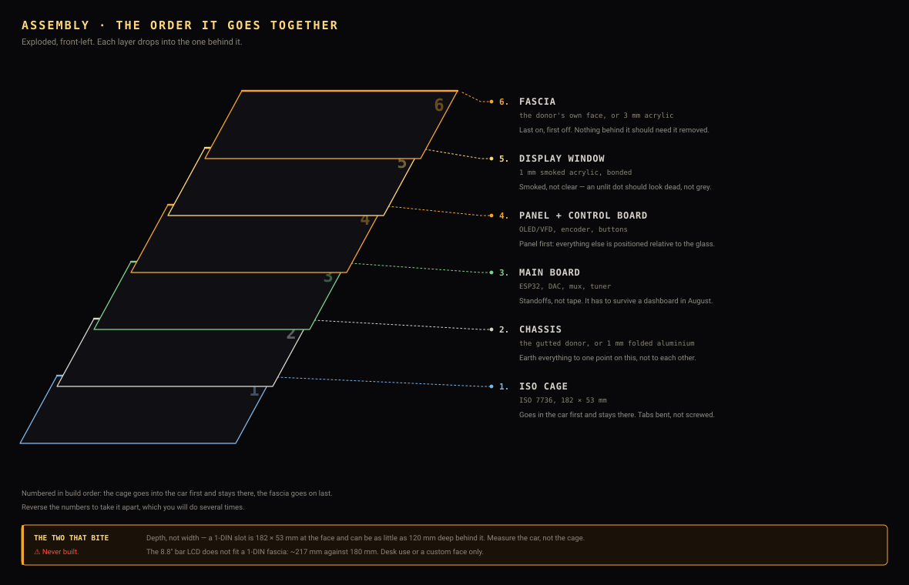

Assemble it. Eleven steps, one action each, a page each — start at step 1 and flick through.
What follows is meant to work the way furniture instructions work: one action per step, the parts for that step listed with quantities, the sub-assembly drawn as it looks before the action with the new part ghosted where it is going, and no prose you have to read to know what to do.
That format has one property prose cannot have — you can tell at a glance whether you have done it right, because the drawing shows the state you should be looking at. Text says “fit the standoffs”; a picture says “four of them, in these corners, threaded end up.”

The step pages are for a phone propped against a vice. If you want it on paper, the same eleven steps are laid out four to a sheet, from the same drawing code and the same camera: sheet 1, sheet 2, sheet 3.
⚠️ Every dimension is real and none of it has been built. The chassis is 178 mm wide because a 1-DIN aperture is 182 mm and the cage takes 2 mm a side; the board is 100 × 70 because that is what the parts fit on. Drawn to scale from ISO 7736 and the datasheets — so if a number here is wrong, it is wrong in a way you can measure. No step below has been performed.
{kind=link}
{kind=link}
{kind=link}
{kind=link}
{kind=link}